Semantic Delta · MVP-Prototyp
Prüfstand vom 21. September 2026. Vollständige Ansichten aus der verbundenen Penpot-Datei. Auf ein Bild klicken, um die PNG-Datei in Originalgröße zu öffnen.
Risk und Confidence sind getrennt. Keine Findings bedeuten keine garantierte Sicherheit oder Gleichheit. Partial Analysis bleibt sichtbar. Operational Errors liefern kein semantisches Assessment.
Dies ist ein klickbarer Designprototyp mit vorgegebenen Beispielen. Texteingabe, Dateizugriff und SQL-Analyse sind nicht live; Berichtsvorschauen sind gestaltet.
01 · Einstieg / Startscreen
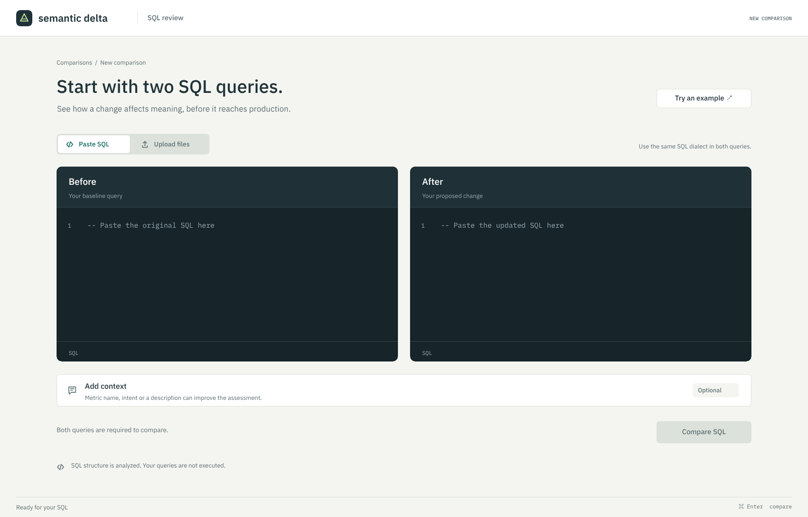
01-entry.png · vollständige Ansicht, ohne Browserleisten02 · SQL-Paar vor dem Vergleich
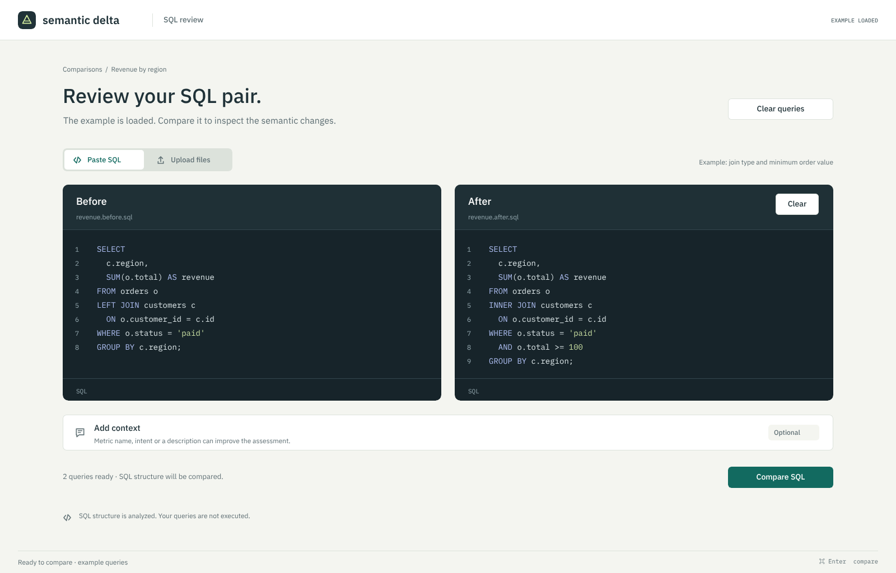
02-sql-pair-ready.png · vollständige Ansicht, ohne Browserleisten03 · Hauptergebnis mit Findings
03-result-findings.png · vollständige Ansicht, ohne Browserleisten04 · Detailansicht: Filter-Finding
04-finding-detail.png · vollständige Ansicht, ohne Browserleisten05 · Keine modellierten Findings
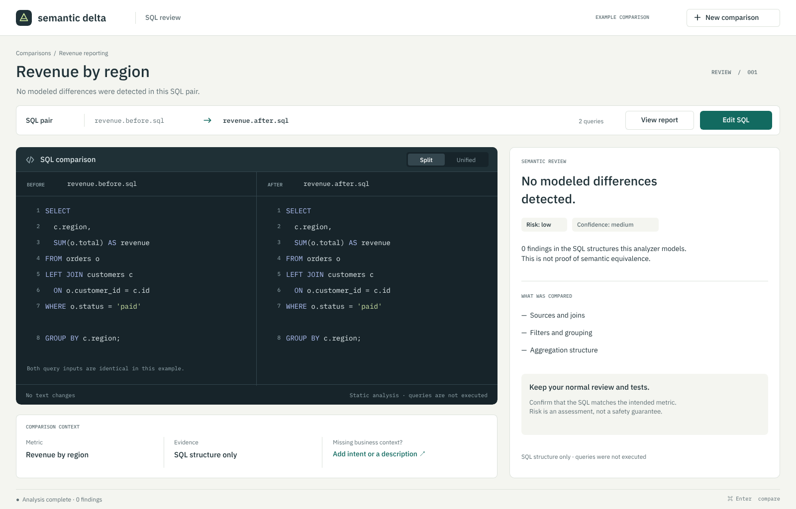
05-no-findings.png · vollständige Ansicht, ohne Browserleisten06 · Partial Analysis und sichtbare Limitierung
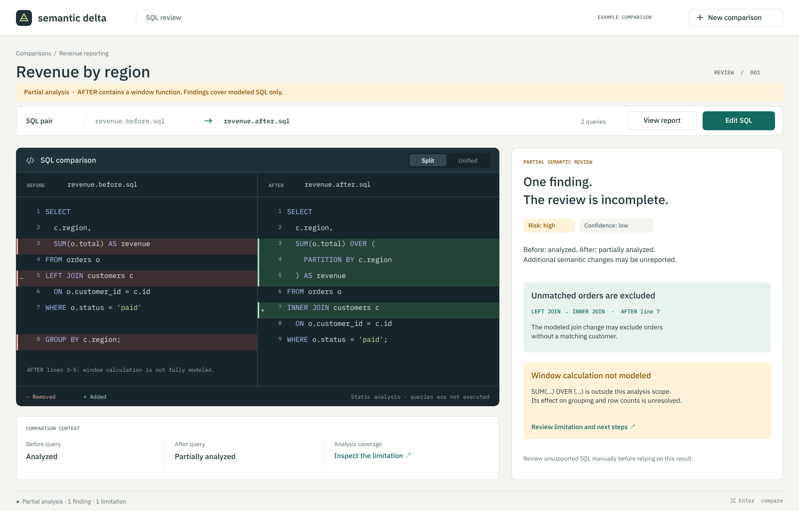
06-partial-analysis.png · vollständige Ansicht, ohne Browserleisten07 · Operational Error ohne Assessment
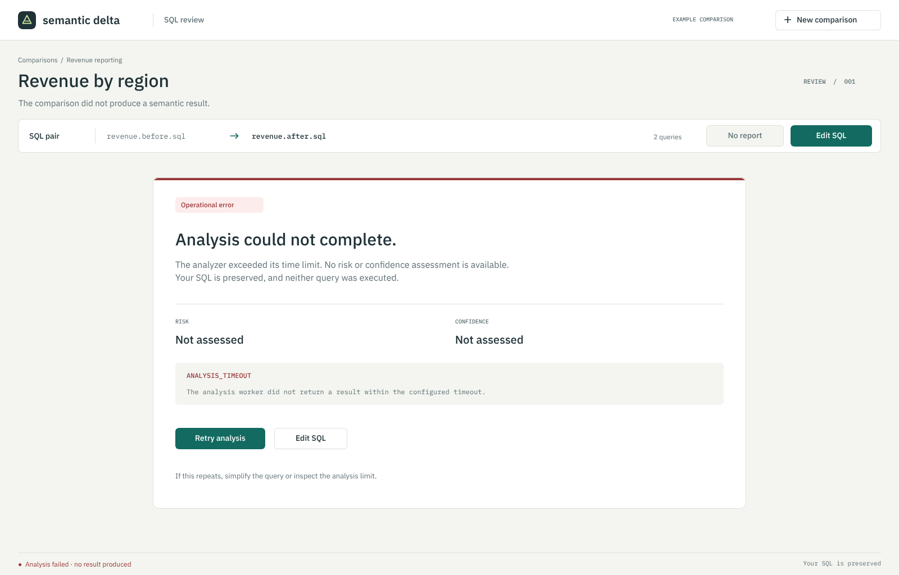
07-operational-error.png · vollständige Ansicht, ohne Browserleisten08 · Risk-vs-Confidence-Erklärung
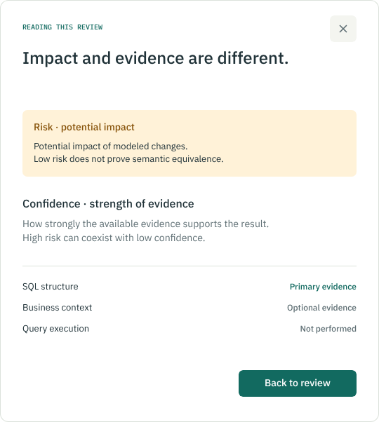
08-risk-confidence.png · vollständige Ansicht, ohne Browserleisten09 · SQL-Dateipaar ausgewählt
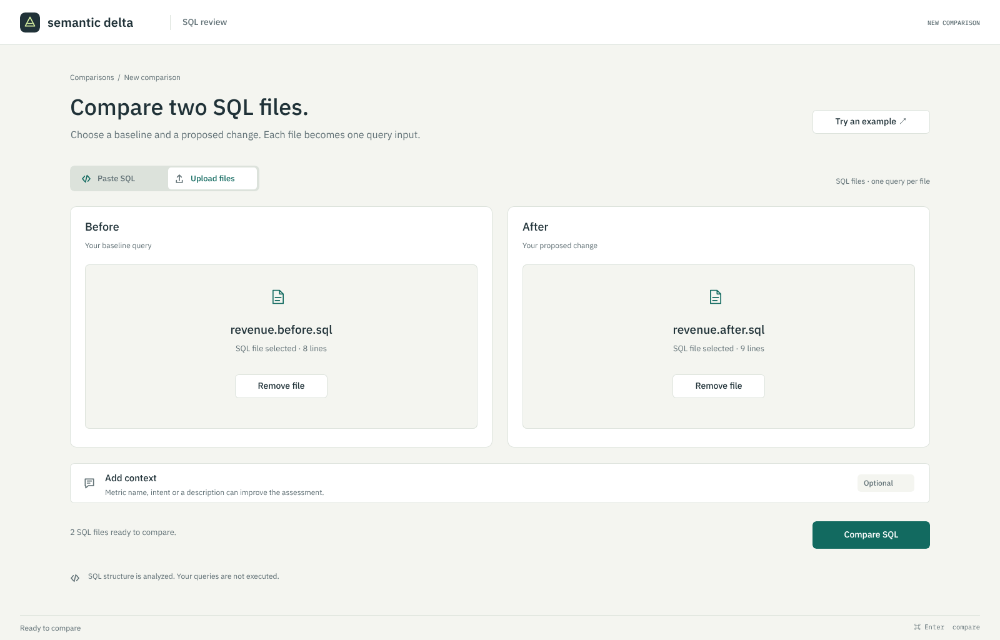
09-file-selection.png · vollständige Ansicht, ohne Browserleisten10 · Fehlende After-Eingabe
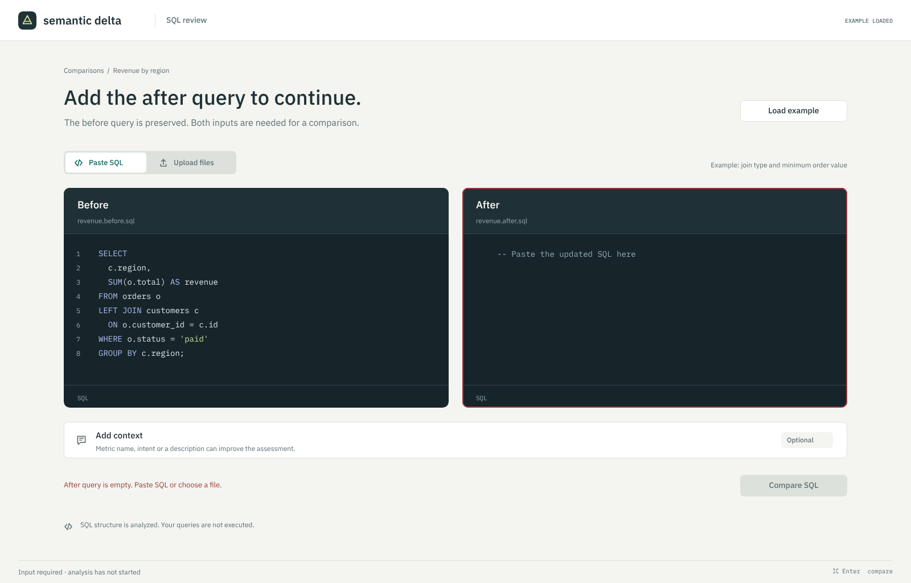
10-input-validation.png · vollständige Ansicht, ohne Browserleisten11 · Laufende Analyse
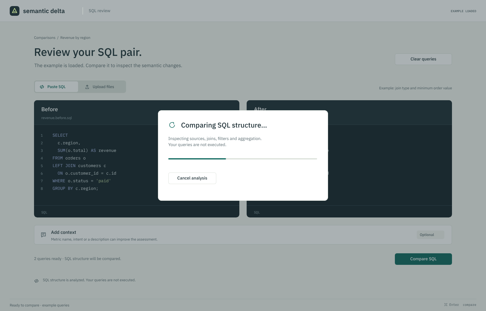
11-analysis-running.png · vollständige Ansicht, ohne Browserleisten12 · Getrennter Kontext pro SQL-Eingabe
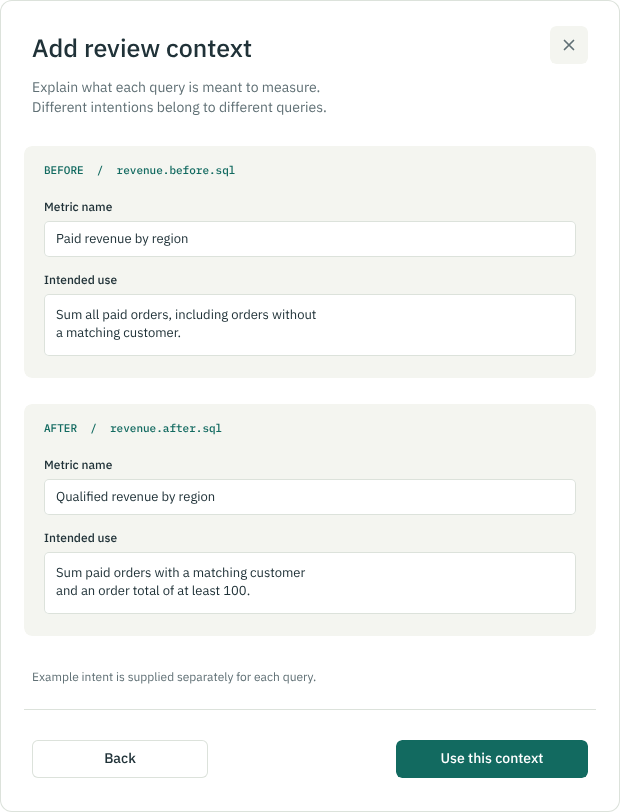
12-context.png · vollständige Ansicht, ohne Browserleisten13 · Limitierung und nächste Schritte
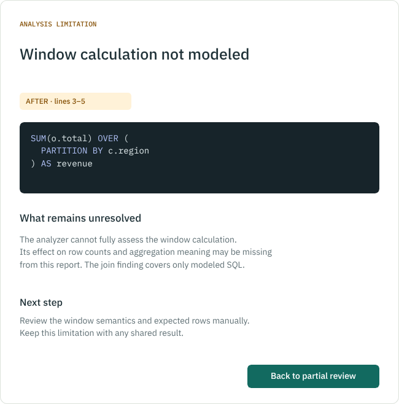
13-limitation-detail.png · vollständige Ansicht, ohne Browserleisten14 · Bericht mit Analysegrenzen
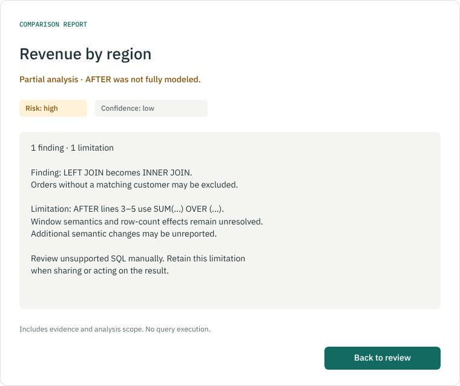
14-partial-report.png · vollständige Ansicht, ohne Browserleisten15 · Unified-Ansicht mit Finding
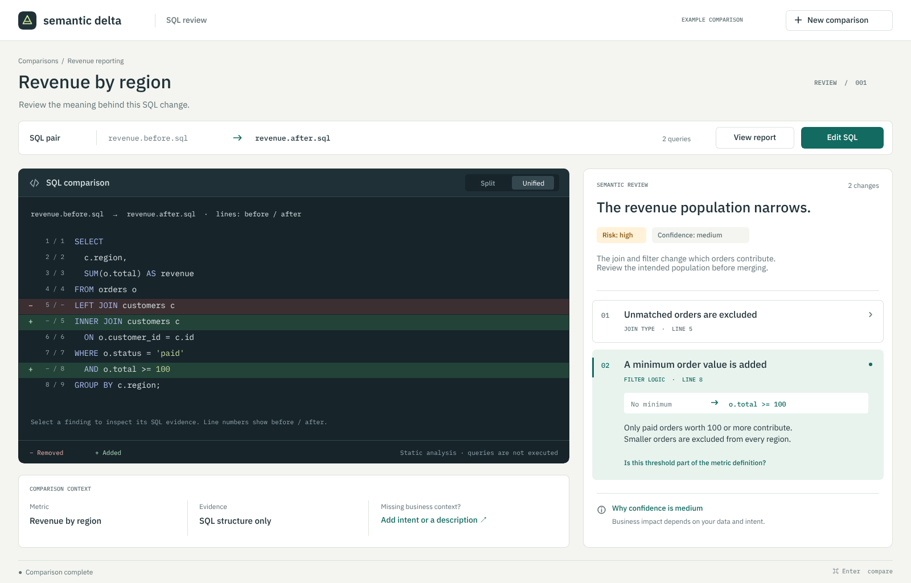
15-unified-detail.png · vollständige Ansicht, ohne Browserleisten16 · Ergebnis mit Kontext
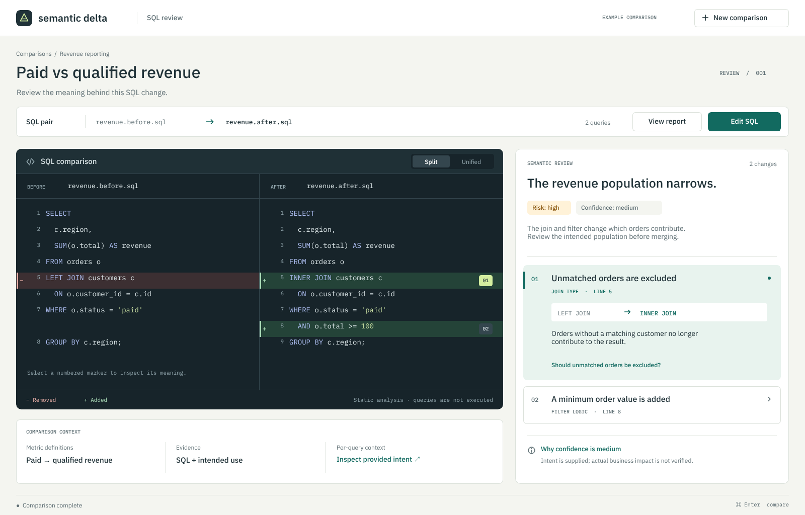
16-result-context.png · vollständige Ansicht, ohne Browserleisten17 · Übersicht der Prüfszenarien
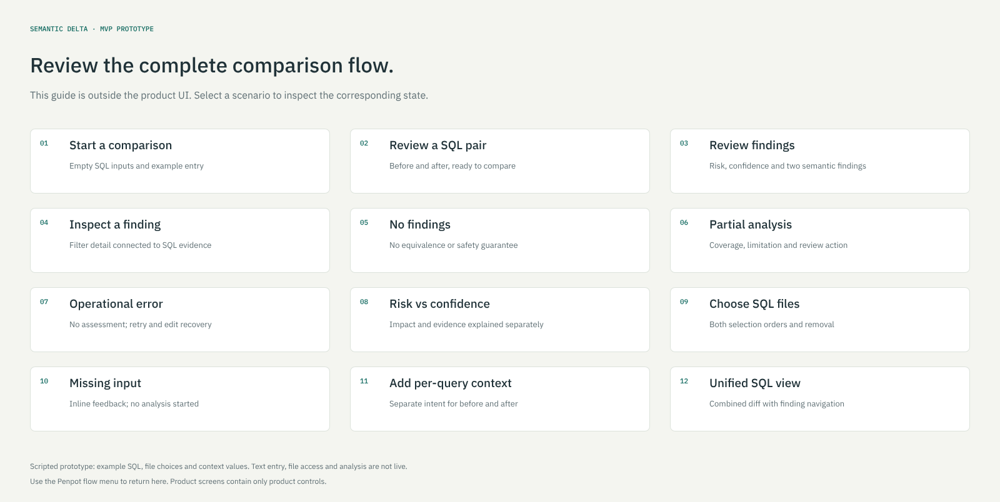
17-review-guide.png · vollständige Ansicht, ohne Browserleisten